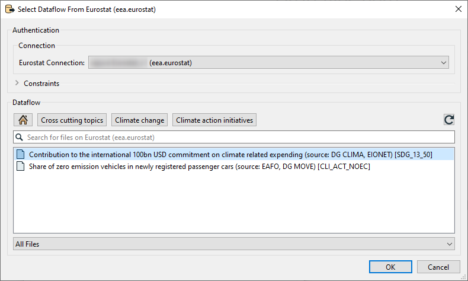

Eurostat (eea.Eurostat)
This FME Package contains the Eurostat Reader introduced for FME 2022.
Eurostat is the statistical office of the European Union, based in Luxembourg (LU). It publishes official, harmonised statistics on the European Union and the euro area, offering a comparable, reliable and objective portrayal of Europe's society and economy.
A vast range of data is available for the EU as a whole, for Member States and in many cases also for candidate countries, EFTA members and other European countries, down to the level of regions and cities. All users may consult or download data and publications free of charge from the Eurostat web site. For more information on Eurostats policies and copyright rules: Copyrights
Usage
To choose a dataset:
- click on the down arrow on the right side.
- Select File From Web
- Browse Eurostat (eea.eurostat)
The Eurostat Reader checks which datasets (dataflows) are available. Browse through the catalogs untill the desired dataset is found. Double click the dataset or select it and click on "ok".
The reader will allow you to pick 'one' dataset.
Optional filters can be set in the parameter options.
FME Feature Types are defined by the dataset chosen.
See also
For instructions and more information: Package Homepage.
Quick Facts
| Keyword | Value |
|---|---|
| Format Type Identifier | EEA.EUROSTAT |
| Requirements | FME Build 22618+ |
| Reader/Writer | Reader |
| Licensing Level | Professional and above |
| Dependencies | Python 3.8+ |
| Dataset Type | None |
| Feature Type | Dataflow name |
| Typical File Extensions | Not applicable |
| Automated Translation Support | ??? |
| User-Defined Attributes | ??? |
| Coordinate System Support | Yes |
| Generic Color Support | No |
| Spatial Index | No |
| Schema Required | ??? |
| Transaction Support | ??? |
| Geometry Type | ??? |
| Encoding Support | UTF-8 |
Geometry Support???:
| Geometry | Supported? |
|---|---|
| aggregate | yes1 |
| circles | no |
| circular arc | no |
| donut polygon | yes |
| elliptical arc | no |
| ellipses | no |
| line | yes |
| none | yes |
| point | yes |
| polygon | yes |
| raster | no |
| solid | no |
| surface | no |
| text | no |
| z values | yes |
Only homogeneous aggregates (MultiPoint, MultiLine...) but not heterogeneous ones.
Eurostat Feature Representation (Format Attributes)
| Attribute Name | Notes | Contents |
|---|---|---|
| Eurostat_*1 | Read-only | Codelist value used in the chosen dataflow. |
| Eurostat_*1_fullName | Read-only | Full name of the codelist value used in the chosen dataflow. |
| xxx | Read-only | yyy. |
[*1]: Each dataflow can have 1:N amount of codelists. Therefore, not all individual parameters are listed here.
Example:
| Attribute Name | Attribute Value |
|---|---|
| Eurostat_GEO | SE |
| Eurostat_GEO_fullName | Sweden |
| Eurostat_FREQ | A |
| Eurostat_FREQ_fullName | Annually |
Eurostat Reader Parameters
Dataset
To choose a dataset:
- Click on the down arrow on the right side of the dataset.
- Choose "Select File From Web".
- Click on "Browse Eurostat (eea.eurostat)".

A dialog window with a tree structure of folders categorizing the datasets will appear. Navigating through the folders will lead to a selectable dataset. Only 1 dataset can be chosen at a time.

Select a dataset and click on "ok".
Parameters
Filter on time
Optional.
Providing a value for Start Period will ensure that data with a Time_Period greater than or equal to the given value will be read.
Providing a value for End Period will ensure that data with a Time_Period less than or equal to the given value will be read.
Values should correspond to the format for Time_Period for the chosen DataFlow.
| Period | Format |
|---|---|
| Annual | YYYY-A1 or YYYY |
| Semester | YYYY-S[1-2] |
| Quarter | YYYY-Q[1-4] |
| Monthly | YYYY-M[01-12] or YYYY-[01-12] |
| Weekly | YYYY-W[01-53] |
| Daily | YYYY-D[001-366] |
| Year interval | YYYY/P[01-99]Y |
Filter on first N and last N observations
Optional.
This allows filtering data observations within a time series to limit the number of observations returned.
Providing values will restrict the reader to only fetch the first N Observations and/or the last N Observations of the DataFlow with consideration taken to the optional Filter on time.
- This filter may be applied to data which has been filtered by dimension and / or time.
- First N Observations return the first N observations in the corresponding series
- Last N Observations return the last N observations in the corresponding series
- Both definitions may be applied e.g. to return the first and last observations in a series.
- If the filter is wrong, then a response is returned with no observation results.
Expose format attributes full name
Ticking the box will lead to coded values in attributes being translated. Leaving the box unchecked will leave coded values as they are.
Eurostat Reader Feature Type Parameters
To access feature type parameters, click the gear icon on a feature type in the workspace. This opens the Feature Type Parameter Editor.
Options
WHERE Clause
A limited filtering is supported by supplying a where-clause.
The where clause must contain exactly one predicate in the form:
<identifier> = <literal-value>
Where identifier is a valid fieldname (FME attribute name), and literal-value a valid SQL literal.
Please note that equality (=) is the only operator that can be used in the expression, i.e. !=, <, >, AND, OR are all examples of operators that can not be used.
These restrictions also applies when using the Reportnet 3 Reader in a FeatureReader-transformer.
Examples:
id = 2
r = 10.2
Double quotes must be used if the field name contains special characters like whitespace:
"my field" = 'Some text'
Single quotes in a string literal needs to be escaped by doubling them:
"my doc" = 'I''d like to code more'
Newlines should be ok but can be tricky.
"my doc" = 'A longer text
Newlines should be ok'
In order to use specific newline character(s), url-encoding can be used:
"my doc" = 'First line%0D%0ASecond line separated by CRLF'
"my doc" = 'First line%0ASecond line separated by LF'
"my doc" = 'First line%0DSecond line separated by CR'